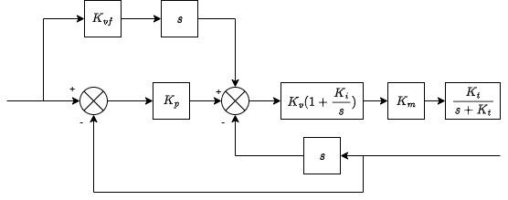
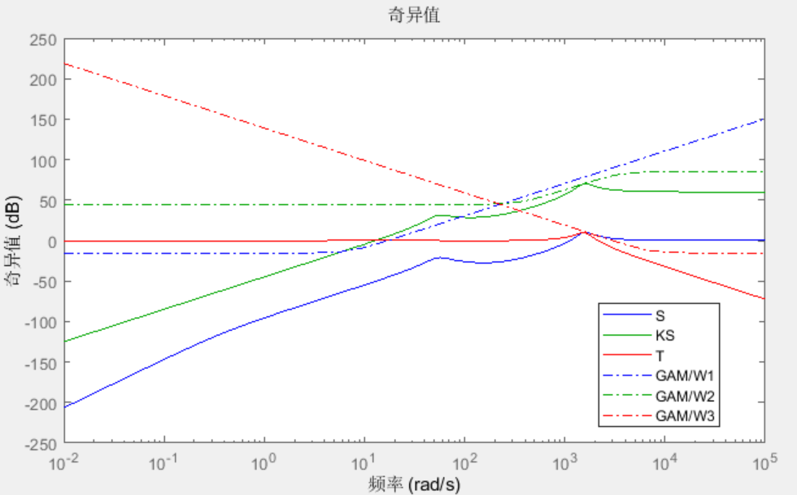
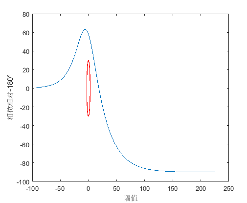
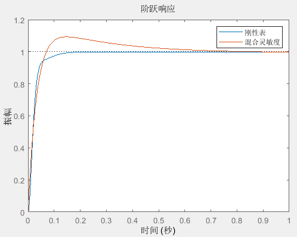

机器人伺服PPI调参
1. 三环控制
三环控制内环是电流环，外环是是速度环位置环，由于电流环带宽很大，因此可以看做1或者一个低通滤波。
速度环和位置环是主要需要设计的环路，即PPI参数。
1.1 PPI参数

如上图，伺服位置环，速度环PPI参数：
| 含义 | 备注 | |
|---|---|---|
| 速度环增益 | 系统响应带宽 | |
| 负载惯量 | 设置成实际的惯量能保证系统带宽稳定 | |
| 速度环积分 | ||
| 转矩指令低通滤波 | 抑制高频噪声 | |
| 位置环增益 | 系统响应带宽 | |
| 速度前馈系数 | 前馈不影响系统稳定性 |
对于带前馈的PPI控制器。

可以转化为：

也就是说将整个位置环当成一个低通滤波器和一个PID控制器。
PID控制器化简如下：
从上式可以看出在PID中$$K_p
2.2 实验条件
实验机型Scara S20-100Z4，满载20Kg，测试J1轴，模态频率约7Hz。
选取J2轴完全伸展和90°夹角两个姿态。
| 计划测试范围 | 取值 | |
|---|---|---|
| 反共振频率到电流振荡 | 27-45Hz | |
| 0到反共振频率的一半 | 12-28rad/s | |
| 0到反共振频率的一半 | 10-28rad/s | |
| 的4倍到无穷大 | 4-40倍Kv |
2.3 参数影响
2.3.1 Kp影响
|M(s)|{\infty}=\left|\left[\begin{array}{c}
W{1} S \
W{2} K S \
W{3} T
\end{array}\right]\right|_{\infty}$$

3.1.4 椭圆稳定性判据

要求任意频率的曲线必须在不稳定椭圆外部，否则认为稳定性不足。
3.2 扫频与理想模型误差
对被控对象进行机械特性扫频，理论上被控对象是一个20dB/dec的积分环节，相位为-90°。
实际上，高频处系统不确定性大，很难测确，低频处由于非线性，也很难测准。

同时，扫频方式对扫频的准确影响也很大。
伺服旧机械特性分析：

伺服新机械特性分析：

3.2.1 单惯量结果与刚性表对比
混合灵敏度指标调节的PPI参数与标准刚性表和对比如下：
| Kp | Kv | Ki | Kt | |
|---|---|---|---|---|
| 刚性表 | 40 | 0.1208 | 31.42 | 1265.82 |
| 混合灵敏度 | 2.40 | 0.0268 | 2.00 | 7969 |


3.3 整体分析
kp和ki倾向调节相近的值，这一点与刚性表类似，但灵敏度调谐更倾向于与将中频段调得比较宽，鲁棒性更好。

4. 计划和问题
计划：
时域采样位置指令和反馈，多目标优化
确定PPI参数范围，建立简化模型，首先判断参数稳定性
问题：
伺服增益参数限制，比如Ki限制只能到106ms
需要采样到PC上，在PC上处理数据和下发move指令
采集末端位置指令和反馈
是否变惯量？参数是否查表？要区分几种工况？